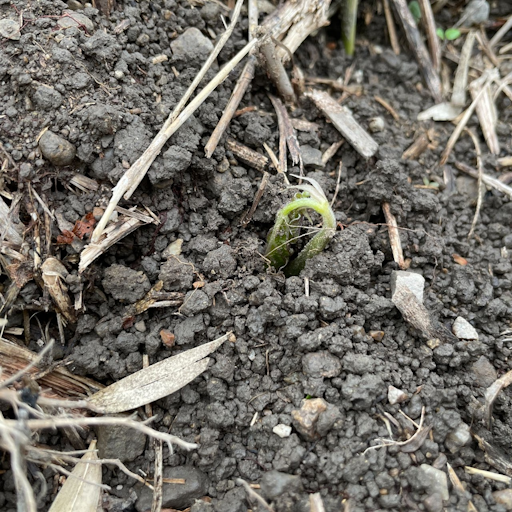
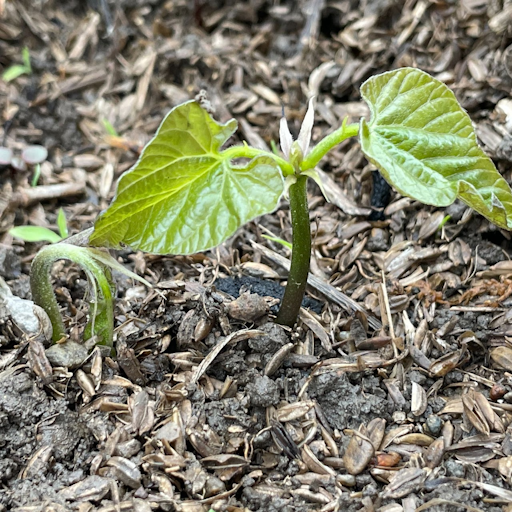
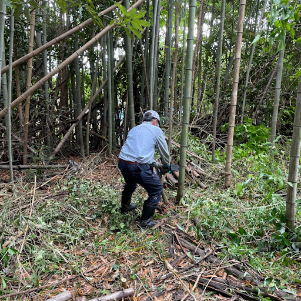

2025年圃場と栽培の様子

花の勢いがあります

すでに莢が大きくなったものも！
8月19日
花が立派に咲きました

圃場からの夕日、きれいだなぁ～

8月14日
夕日が美しい圃場と八升豆の成長している葉っぱたち
5月6日（火）竹を支柱とするために伐採作業をおこなっています

双葉が顔を出しました！
5月6日の撮影です。ところどころで双葉が顔を出し始めました。

双葉が元気にあいさつ！
こちらは元気な双葉と顔を出そうとしている芽が見えますね！1か所に3粒蒔いています。

支柱用の竹の伐採
竹を支柱にするために伐採しています。なるべく自然のものを使って栽培しているので、竹を約600本準備する予定です。